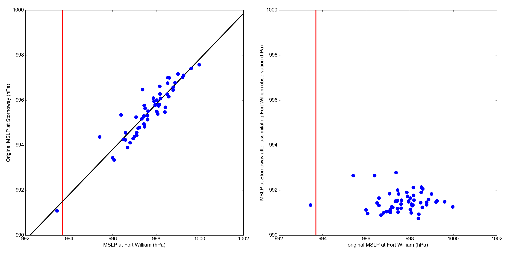

Assimilating a Fort William observation at Stornoway¶

{kind=link}
MSLP at Stornoway, before and after assimilating the Fort William observation.
Scatter plots of 20CR2c ensemble pressures at Stornoway at 6am on 22nd October 1903 against Fort William ensemble pressures. The Stornoway pressures are adjusted by fitting a linear regression (left plot) and then removing the fit from each value (right plot).
Collect the reanalysis data (prmsl ensemble and observations from 20CR2c for 1903):
import Meteorographica.data.twcr as twcr
twcr.fetch('prmsl',1903,version='2c')
twcr.fetch_observations(1903,version='2c')
Script to make the figure:
# UK region weather plot
# Relationship between Fort William and Stornoway
import math
import datetime
import numpy
import collections
import iris
import iris.analysis
import matplotlib
from matplotlib.backends.backend_agg import \
FigureCanvasAgg as FigureCanvas
from matplotlib.figure import Figure
from matplotlib.patches import Circle
import Meteorographica.data.twcr as twcr
import DWR
import DIYA
import sklearn.linear_model
# Date to show
year=1903
month=10
day=22
hour=6
dte=datetime.datetime(year,month,day,hour)
# Landscape page
fig=Figure(figsize=(22,11), # Width, Height (inches)
dpi=100,
facecolor=(0.88,0.88,0.88,1),
edgecolor=None,
linewidth=0.0,
frameon=False,
subplotpars=None,
tight_layout=None)
canvas=FigureCanvas(fig)
font = {'family' : 'sans-serif',
'sans-serif' : 'Arial',
'weight' : 'normal',
'size' : 16}
matplotlib.rc('font', **font)
# Get the DWR observations within +- 2 hours
obs=DWR.load_observations('prmsl',
dte-datetime.timedelta(hours=2),
dte+datetime.timedelta(hours=2))
# Discard everthing except Fort William
obs=obs[obs.name=='FORTWILLIAM']
# load the pressures
prmsl=twcr.load('prmsl',year,month,day,hour,
version='2c')
# Compare with Stornoway
target_lat= 58.21
target_lon= -6.38
# Before scatter plot
ax_scp=fig.add_axes([0.05,0.07,0.43,0.89])
# x-axis
ax_scp.set_xlim([992,1002])
ax_scp.set_xlabel('MSLP at Fort William (hPa)')
# y-axis
ax_scp.set_ylim([990,1000])
ax_scp.set_ylabel('Original MSLP at Stornoway (hPa)')
# Ensemble values at Fort William
interpolator = iris.analysis.Linear().interpolator(prmsl,
['latitude', 'longitude'])
latlon=DWR.get_station_location(obs,'FORTWILLIAM')
ens_FW=interpolator([latlon['latitude'],
latlon['longitude']])
# And at Stornoway
ens_ST=interpolator([numpy.array(target_lat),
numpy.array(target_lon)])
ax_scp.scatter(ens_FW.data/100,ens_ST.data/100,
500, # Point size
'blue', # Color
marker='.',
edgecolors='face',
linewidths=0.0,
alpha=1,
zorder=5)
# Plot the observed FW value
fwi=DWR.at_station_and_time(obs,'FORTWILLIAM',dte)
ax_scp.plot((fwi,fwi),[990,1000],color='red',lw=3)
# Fit a linear model
model=sklearn.linear_model.LinearRegression()
model.fit(ens_FW.data.reshape(-1,1),ens_ST.data)
pre=model.predict(numpy.array((992*100,1002*100)).reshape(-1,1))
ax_scp.plot([992,1002],pre/100,color='black',lw=3)
ax_scp2=fig.add_axes([0.55,0.07,0.43,0.89])
# x-axis
ax_scp2.set_xlim([992,1002])
ax_scp2.set_xlabel('original MSLP at Fort William (hPa)')
# y-axis
ax_scp2.set_ylim([990,1000])
ax_scp2.set_ylabel('MSLP at Stornoway after assimilating Fort William observation (hPa)')
# Adjust the mslp by assimilating the FW ob
ST_adjusted=DIYA.constrain_point(ens_ST.data,ens_FW.data.reshape(-1,1),
model=model,obs=fwi*100)
ax_scp2.plot((fwi,fwi),[990,1000],color='red',lw=3)
ax_scp2.scatter(ens_FW.data/100,ST_adjusted/100,
500, # Point size
'blue', # Color
marker='.',
edgecolors='face',
linewidths=0.0,
alpha=1,
zorder=5)
# Output as png
fig.savefig('before+after_%04d%02d%02d%02d.png' %
(year,month,day,hour))